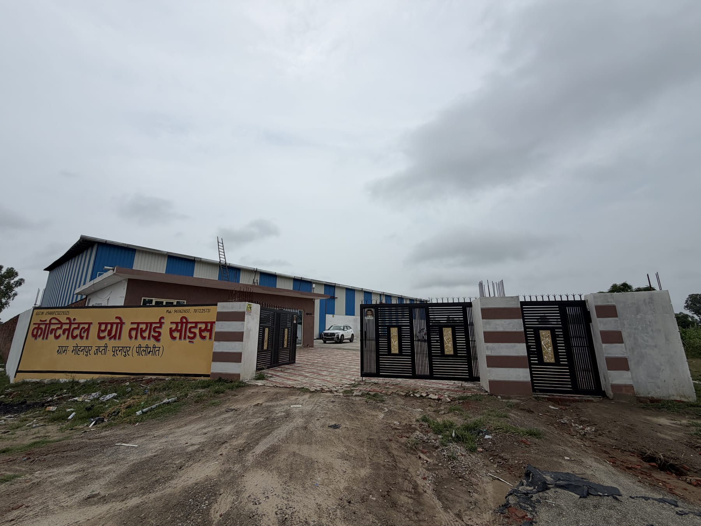

Seed manufacturing for stronger farming networks
Continental Agro Tarai Seeds
उन्नति का बीज
Premium wheat seed manufacturing from the Tarai region, built around farmer trust, plant-backed supply, and a growing distributor network for Indian and international agri-business partners.
Company focus
A professional seed brand starting with wheat and built for scale.
Continental Agro Tarai Seeds currently manufactures wheat seeds and is preparing for a broader seed portfolio in the future. The website now reflects the core needs of a seed company: products, research, production, quality assurance, farmer confidence, and channel expansion.
Read about the companyMain website sections
A complete seed-company structure for Continental Agro.
 Products
Products
Wheat Seed Portfolio
Current varieties, 40 kg pack positioning, and future crop-category roadmap.
 Research
Research
Research & Quality
Original content for trialing, quality checks, germination focus, and field learning.
 Production
Production
Plant & Processing
Facility, storage, handling, packing, and dispatch readiness.

Distribution-ready
Dealer, retailer, trader, and institutional enquiries can all flow through one clear path.
The new site has dedicated partner messaging, so visitors from the seed trade can understand what Continental manufactures today, how the facility supports supply, and how to start a serious conversation.